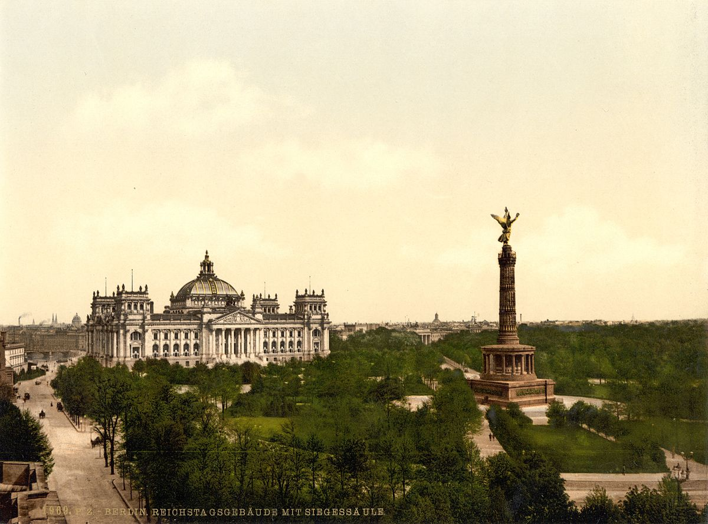
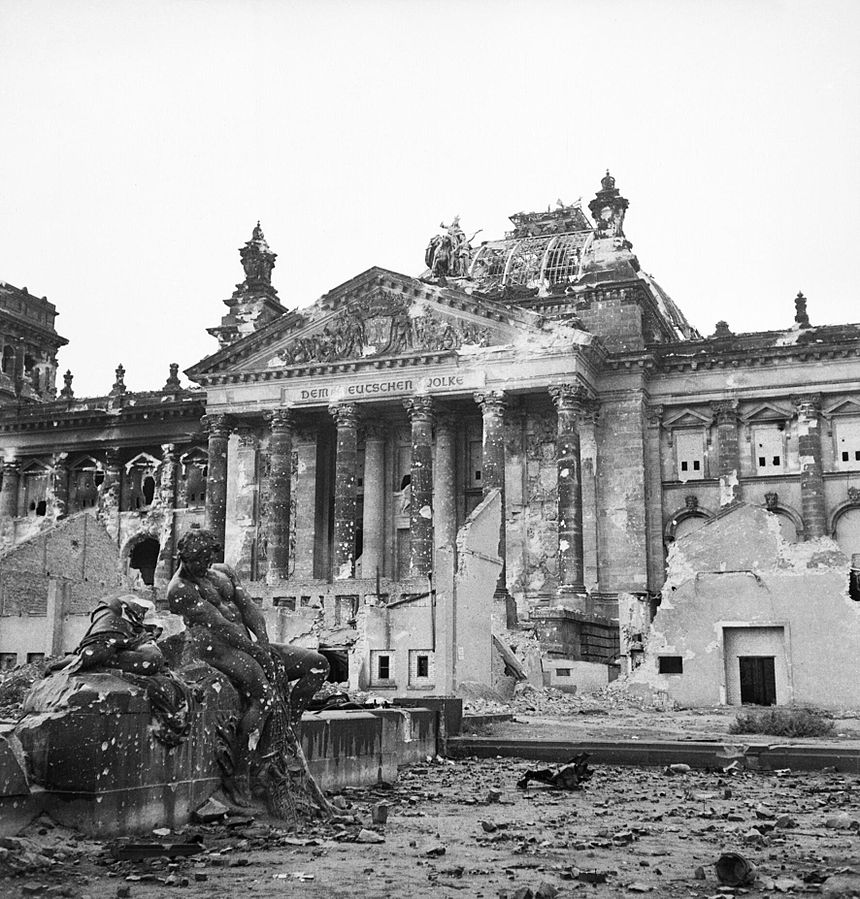
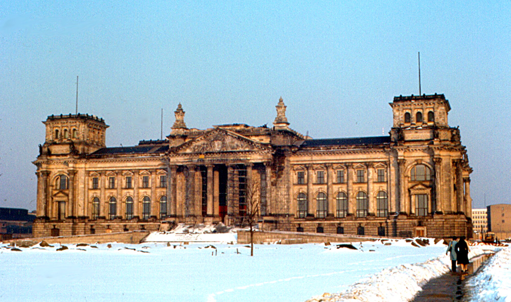
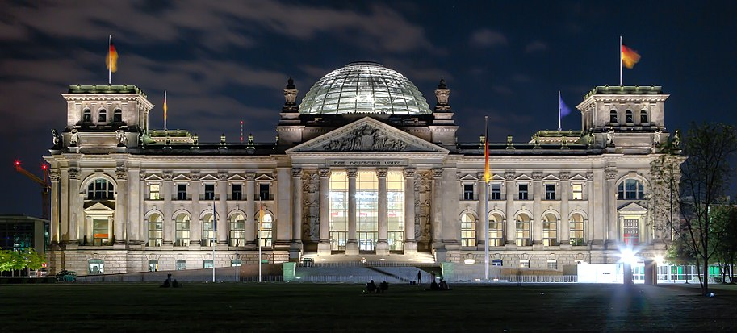

Zgodovina
Obdobja cesarske in weimarske republike
 Reichstag 1900Gradnja stavbe se je začela precej po združitvi Nemčije leta 1871. Pred tem se je parlament sestavil v več drugih stavbah v Leipziger Straße v Berlinu, vendar so bile te na splošno premajhne. Tako so leta 1872 izvedli arhitekturno tekmovanje s 103 sodelujočimi arhitekti za postavitev nove stavbe. Po kratkem pregledu možnih najdišč je parlamentarni odbor priporočil vzhodno stran Königsplatza (danes Platz der Republik), ki ga je zasedla palača poljsko-pruskega aristokrata Athanasiusa Raczyńskega.
Dela so se začela šele deset let kasneje zaradi različnih težav z nakupom nepremičnine in prepirov med Wilhelmom I, Ottom von Bismarckom in člani Reichstaga glede izvedbe gradnje. Po dolgih pogajanjih je bila palača Raczyński kupljena in porušena, kar je omogočilo novo zgradbo.
Leta 1882 je potekal še en arhitekturni natečaj, na katerem je sodelovalo 200 arhitektov. Tokrat bi zmagovalec - frankfurtski arhitekt Paul Wallot - dejansko videl, kako se njegov novobaročni projekt izvaja. Neposredni model za Wallotovo zasnovo je bila spominska dvorana v Filadelfiji, glavna stavba stoletne razstave leta 1876. Nekaj okrasnih skulptur, reliefov in napisov Reichstaga je izdelal kipar Otto Lessing. 29. julija 1884 je Wilhelm I na vzhodni strani Königsplatza dokončno položil temeljni kamen. Preden je Philipp Holzmann A.G. leta 1894 gradnjo končal, je Wilhelm I umrl (leta 1888, leto treh cesarjev). Njegov morebitni naslednik Wilhelm II. Je bolj parlamentarno demokracijo gledal bolj zlahka kot njegov dedek. Prvotna stavba je bila priznana za gradnjo originalne kupole iz jekla in stekla, ki je v tistem času veljala za inženirski podvig. Toda njegova mešanica arhitekturnih slogov je naletela na široko kritiko.
Leta 1916 so bile nad glavno fasado stavbe postavljene ikonske besede Dem Deutschen Volke ("Nemškemu ljudstvu"), kar je na veliko nezadovoljstvo Wilhelma II., Ki je poskušal preprečiti dodajanje napisa zaradi njegovega demokratičnega pomena. Po končani prvi svetovni vojni in odpovedi Wilhelma je med revolucionarnimi dnevi 1918 Philipp Scheidemann 9. novembra z enega od balkonov stavbe Reichstaga razglasil institucijo republike. V stavbi je bil še naprej sedež parlamenta Weimarske republike (1919–1933), ki se je še vedno imenoval Reichstag. Do 42 protestnikov je umrlo med krvavo kopeljo Reichstaga 13. januarja 1920, ko so delavci poskušali protestirati proti zakonu, ki bi omejeval njihove pravice, je bila to najbolj krvava demonstracija v nemški zgodovini.
Nacistično obdobje
Stavba je v okoliščinah, ki še niso bile povsem znane, zagorela 27. februarja 1933. To je dalo pretvezo, da so nacisti umaknili večino pravic, predvidenih z Weimarsko ustavo iz leta 1919 v požarnem odloku Reichstaga, kar jim je omogočilo, da so aretirali komuniste in okrepili policijsko akcijo po vsej Nemčiji.
V 12 letih nacistične vladavine stavba Reichstaga ni bila uporabljena za parlamentarne seje. Namesto tega je nekajkrat, ko se je Reichstag sploh sestal, to storil v operni hiši Kroll, nasproti stavbe Reichstaga. To se je še posebej nanašalo na zasedanje 23. marca 1933, na katerem je Reichstag predal svoja pooblastila Adolfu Hitlerju v zakonu o omogočitvi, ki je še en korak v tako imenovani Gleichschaltung ("koordinacija"). Glavna dvorana stavbe (ki je bila po požaru neuporabna) je bila namesto tega uporabljena za propagandne predstavitve in med drugo svetovno vojno za vojaške namene. Prav tako je veljalo, da je bil preurejen v stolp, vendar je bilo ugotovljeno, da je strukturno neprimeren.
Stavba, ki po požaru ni bila nikoli v celoti popravljena, je bila zaradi zračnih napadov še poškodovana. Med bitko pri Berlinu leta 1945 je zaradi zaznanega simbolnega pomena postal eden osrednjih ciljev, ki jih je Rdeča armada zajela. Danes lahko obiskovalci stavbe še vedno vidijo sovjetske grafite na zadimljenih stenah znotraj in na delu strehe, ki je bila ohranjena med rekonstrukcijami po ponovni združitvi.
2. maja 1945 je Jevgenij Khaldei posnel fotografijo Dvig zastave nad Reichstag-om, ki je simbolizirala zmago USSR nad Nemčijo.
 Reichstag 1945Hladna vojna
 Reichstag 1970Ko se je začela hladna vojna, je bila stavba fizično v zahodnem Berlinu, ki je ležala v britanski coni, vendar le nekaj metrov od meje vzhodnega Berlina, ki je potekala okoli zadnjega dela stavbe in jo leta 1961 zaprl berlinski zid. Med berlinsko blokado se je 9. septembra 1948 pred stavbo zbralo ogromno prebivalcev Zahodnega Berlina, župan Ernst Reuter pa je imel slavni govor, ki se je končal z "Ihr Völker der Welt, schaut auf diese Stadt!" ("Ljudje sveta, poglejte to mesto!")
Po vojni je bila stavba v bistvu ruševina. Poleg tega od njega ni bilo prave koristi, saj je bil sedež vlade Zahodne Nemčije ustanovljen v Bonnu leta 1949. Kljub temu je leta 1956 zahodnonemška vlada po nekaj razpravah odločila, da se rajhstaga ne sme rušiti, ampak namesto tega obnoviti. Vendar je bila porušena kupola prvotne stavbe, ki je bila v vojni tudi močno poškodovana. Izvedeno je bilo še eno arhitekturno tekmovanje, zmagovalec Paul Baumgarten pa je stavbo rekonstruiral med letoma 1961 in 1964. Odstranil je vse razkošne heraldične kipe, spomenike, okraske in podobno, ki so se od znotraj vračali mitologiji nemške preteklosti in tudi največji na zunanji strani stavbe. Pravzaprav je znotraj zgodovinskega rajhstaga ustvaril navadno stavbo, ki je obdržala le zunanje stene, ki so jim bile odvzete večine kipov in okrasja.
Umetniška in praktična vrednost njegovega dela je bila po nemški združitvi predmet številnih razprav. Po sporazumu o štirih močeh o Berlinu iz leta 1971 je bil Berlin formalno zunaj meja Vzhodne ali Zahodne Nemčije, zato zahodnonemški parlament, Bundestag, ni smel formalno sestati v Zahodnem Berlinu. Ta prepoved je bila upoštevana, čeprav je Vzhodna Nemčija razglasila Vzhodni Berlin za glavno mesto in s tem kršila to določbo. Do leta 1990 je bila stavba tako uporabljena le za občasna predstavniška srečanja in enkratne prireditve, na primer brezplačni koncert britanske rock skupine Barclay James Harvest 30. avgusta 1980. Uporabljali so jo tudi za splošno hvaljeno stalno razstavo o nemškem jeziku. zgodovina imenovala Fragen an die deutsche Geschichte ("Vprašanja nemški zgodovini").
Ponovna združitev nemčije
 Reichstag 2013Uradna slovesnost nemške združitve 3. oktobra 1990 je bila v stavbi Reichstaga, med katero so bili kancler Helmut Kohl, predsednik Richard von Weizsäcker, nekdanji kancler Willy Brandt in mnogi drugi. Dogodek je vključeval ogromne izdelke za ognjemete [navedba potrebna]. Naslednji dan se je parlament združene Nemčije kot simbolni akt zbral v stavbi Reichstaga.
Vendar takrat vloga Berlina še ni bila sprejeta. Šele po ostri razpravi, ki so jo mnogi obravnavali kot eno najbolj nepozabnih zasedanj parlamenta, je 20. junija 1991 Bundestag s precej majhno večino sklenil, da sta se vlada in parlament vrnili v Berlin iz Bonna. Leta 1992 je Norman Foster zmagal na še enem arhitekturnem natečaju za rekonstrukcijo stavbe. Njegov zmagovalni koncept je bil videti zelo drugačen od tistega, kar je bil kasneje izveden. Predvsem prvotni dizajn ni vključeval kupole.
Pred začetkom obnove so Reichstag leta 1995 zavili bolgarsko-ameriški umetniki Christo in njegova žena Jeanne-Claude ter privabili milijone obiskovalcev. Projekt so umetniki financirali s prodajo pripravljalnih risb in kolažev ter zgodnjih del petdesetih in šestdesetih let 20. stoletja.
Med rekonstrukcijo je bila stavba najprej skoraj popolnoma raztrebljena, saj so odstranili vse, razen zunanjih sten, vključno z vsemi spremembami, ki jih je v šestdesetih letih opravil Baumgarten. Spoštovanje zgodovinskih vidikov stavbe je bil eden od pogojev, ki so jih postavljali arhitekti, zato naj bi se sledi zgodovinskih dogodkov ohranile v vidnem stanju. Med njimi so bili tudi grafiti, ki so jih sovjetski vojaki zapustili po zadnji bitki za Berlin aprila – maja 1945. V cirilici so napisana slogana, kot so "Hitler kaputt" in imena posameznih vojakov. Vendar so bili v dogovoru s takratnimi ruskimi diplomati odstranjeni grafiti z rasističnimi ali seksističnimi temami.
Obnova je bila končana leta 1999, Bundestag pa je tam prvič uradno sklical 19. aprila istega leta. Reichstag je zdaj druga najbolj obiskana znamenitost v Nemčiji, nenazadnje tudi zaradi ogromne steklene kupole, ki je bila postavljena na strehi kot gesta originalni kupoli iz leta 1894 in je s čudovitim razgledom na mesto, zlasti ponoči.